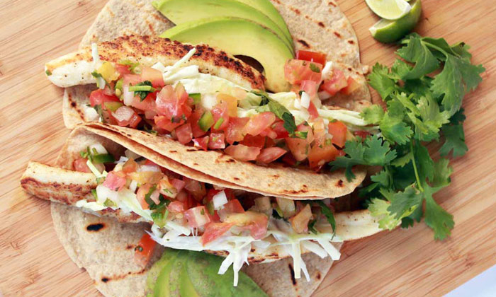
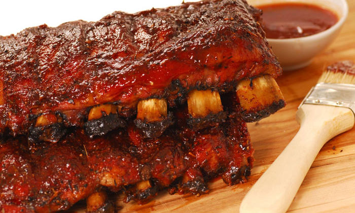

Brought by the British, Dutch, and Swedes in the 17th and 18th centuries, apple pie has since become an American classic. Modern American apple pie includes a crust on the bottom, apple filling usually spiced with cinnamon, nutmeg, and other spices, and a top crust that can vary. Traditional apple pies usually include a basic crust while other styles incorporate different crusts (Dutch apple pies can come with a crumb crust or a lattice style for example).
Ingredients
1 ½ cups all-purpose flour
½ cup vegetable oil
2 tablespoons cold milk
1 ½ teaspoons white sugar
1 teaspoon salt
6 Fuji apples, cored and sliced
¾ cup white sugar
3 tablespoons all-purpose flour
¾ teaspoon ground cinnamon
½ teaspoon ground nutmeg
½ cup all-purpose flour
½ cup white sugar
½ cup butter
Directions
Preheat oven to 350 degrees F (175 degrees C).
To Make Crust: In a large bowl, mix together 1 1/2 cups flour, oil, milk, 1 1/2 teaspoons sugar and salt until evenly blended. Pat mixture into a 9 inch pie pan, spreading the dough evenly over the bottom and up sides. Crimp edges of the dough around the perimeter.
To Make Filling: Mix together 3/4 cup sugar, 3 tablespoons flour, cinnamon, and nutmeg. Sprinkle over apples and toss to coat. Spread evenly in unbaked pie shell.
To Make Topping: Using a pastry cutter, mix together 1/2 cup flour, 1/2 cup sugar and butter until evenly distributed and crumbly in texture. Sprinkle over apples.
Put pie in the oven on a cookie sheet to catch the juices that may spill over. Bake 45 minutes.
Buckeyes
The Buckeye candy, simply referred to as buckeyes, is a common sweet in Ohio and its surrounding states. Homemade buckeyes are common but are also easily purchasable. They consist of peanut butter balls dipped in chocolate. The peak of the candy leaves a small area of peanut butter uncovered, giving it its iconic appearance mimicking the buckeye nut.
Ingredients
1 ½ cups peanut butter
1 cup butter, softened
½ teaspoon vanilla extract
6 cups confectioners’ sugar
4 cups semisweet chocolate chips
Directions
In a large bowl, mix together the peanut butter, butter, vanilla and confectioners' sugar. The dough will look dry. Roll into 1 inch balls and place on a waxed paper-lined cookie sheet.
Press a toothpick into the top of each ball (to be used later as the handle for dipping) and chill in freezer until firm, about 30 minutes.
Melt chocolate chips in a double boiler or in a bowl set over a pan of barely simmering water. Stir frequently until smooth.
Dip frozen peanut butter balls in chocolate holding onto the toothpick. Leave a small portion of peanut butter showing at the top to make them look like Buckeyes. Put back on the cookie sheet and refrigerate until serving.
Crawfish Etouffee
Crawfish etouffee is a common dish in Cajuun and Creole cuisine. Although etouffee can be made with any type of shellfish (crab, shrimp, etc.), the crawfish variant is the most popular. A sauce made from a roux and is simmered along with the crawfish. Serving it over rice is the most popular method. You can find it in New Orleans and coastal parts of Louisiana, Mississippi, Alabama, and Texas.
Ingredients
3 cups long grain white rice
6 cups water
¾ cup butter
1 large onion, chopped
1 clove garlic, chopped
¼ cup all-purpose flour
1 pound crawfish tails
2 tablespoons canned tomato sauce
1 cup water, or as needed
6 green onions, chopped
Salt and pepper to taste
Directions
Combine the rice and water in a saucepan, and bring to a boil. Cover, and reduce heat to low. Simmer for 15 to 20 minutes, until rice is tender and water has been absorbed.
While the rice is cooking, melt the butter in a large skillet over medium heat. Add the onion, and saute until transparent. Stir in the garlic, and cook for a minute. Stir in the flour until well blended. Gradually stir in the tomato sauce and water, then add the crawfish tails and bring to a simmer. Add the green onions and season with salt, pepper, and Cajun seasoning. Simmer for 5 to 10 minutes over low heat, until the crawfish is cooked but not tough. Serve over hot cooked rice.
Deep Dish Pizza
Although the pizza debate is hotly contested between Chicago and New York, we will be focusing on Chicago-style deep dish pizza. New York will get its own dish further down. The pan in which the pizza is cooked in gives it a high edge and a depth that allows for a large amount of sauce and cheese. It can also be prepared as a stuffed pizza. Both versions give the appearance of a pie more than a pizza.
Ingredients (Pizza Crust)
3 1/4 cups all-purpose flour
½ cup yellow cornmeal
1 1/4 teaspoons salt
1 Tablespoon granulated sugar
2 1/4 teaspoons Red Star Platinum yeast
1 1/4 cups slightly warm water
1/2 cup unsalted butter, divided (1/4 cup melted, 1/4 cup softened)
olive oil for coating
Ingredients (Tomato Sauce)
2 Tablespoons unsalted butter
1 small onion, grated
3/4 teaspoon salt
1 teaspoon dried oregano
1/2 teaspoon crushed red pepper flakes
3 garlic cloves, minced
one 28-ounce can crushed tomatoes
1/4 teaspoon granulated sugar
Ingredients (Toppings)
4 cups shredded mozzarella cheese
1/2 cup grated parmesan cheese
Directions
For the crust: Combine the flour, cornmeal, salt, sugar, and yeast in a mixer. Add the warm water and 1/4 cup of melted butter. On low speed, beat the dough ingredients. Continuing on low speed, beat the dough until it is soft.
Remove the dough from the bowl and form into a ball. Lightly grease a large mixing bowl with olive oil and place the dough inside, turning it around so that all sides of the dough are coated in the oil. Cover the bowl tightly with aluminum foil and allow to rise in a warm environment for 1-2 hours.
Lightly flour a large work surface. Remove dough from the bowl, set the bowl and aluminum foil aside. Gently punch down the dough to remove any air bubbles and roll the dough into a large 15x12 rectangle. Spread 1/4 cup of softened butter on top of the dough. Cut the dough log in half. Form the two pieces of dough into balls and place back into your greased bowl. Cover with aluminum foil and allow to rise in the refrigerator.
Place butter in a medium saucepan over medium heat and allow it to melt. Once melted, add the grated onion, salt, oregano, and red pepper flakes. after about 5 minutes, add the garlic, tomatoes, and sugar. Turn the heat down to low-medium and allow it to simmer for 30 minutes.
Preheat oven to 425F degrees.
Roll the dough out on a lightly floured work surface, working it into a 12-inch circle. Place over a 9x2 inch deep dish cake pan. Using your fingers, press the dough into the cake pan. Brush the top edges of the dough with a little olive oil. Fill each pizza with 1/2 of the cheese, then your toppings. Pour about 1 and 1/4 cups of sauce on top of each. Sprinkle each with 1/4 cup of grated parmesan cheese.
Bake for 20-28 minutes or until the crust is golden brown. Remove the pizzas from the oven and allow to cool in the pans placed on a wire rack for 10 minutes. After 10 minutes, slice, serve, and enjoy.
Coney Island Hot Dog
A Coney Island hot dog is a hot dog covered with savory meat sauce, mustard, onions, and cheese. It’s easy to make and can be customized to anyone’s tastes, making it a popular choice in regions from Indiana, Michigan, Minnesota, North Dakota, Ohio, Oklahoma, and Texas.
Ingredients
4 hot dogs
1 hot dog bun, sliced
1 small onion, diced
1 can chile sauce without beans
4 tablespoons yellow mustard
Directions
Preheat an outdoor grill for medium-high heat.
Place hot dogs on the grill; cook until browned, 5 to 8 minutes, turning once, or until done to suit your taste. Lightly grill hot dog rolls.
Meanwhile, place the chile sauce in a small microwave-safe bowl; cook 1 minute. Stir, and cook 1 minute more.
Place hot dogs on buns. Top each with chile sauce, onion, and 1 tablespoon mustard, or to taste.

Fish Tacos
Originating in Baja California, fish tacos are a popular choice for Californians. They are found on the streets and in restaurants. It is often made with soft corn tortillas, grilled or fried fish, lettuce or cabbage, pico de gallo, and some sort of sauce.
Ingredients
¼ cup sour cream
2 tablespoons lime juice
Salt and ground black pepper to taste
1 jalapeno pepper, halved lengthwise
2 ½ cups shredded red cabbage
4 green onions, thinly sliced
2 tablespoons olive oil
1 pound tilapia fillets, cut into strips
8 (6 inch) flour tortillas
½ cup chopped fresh cilantro
Directions
Mix sour cream and lime juice together in a large bowl; season with salt and black pepper. Reserve about half the mixture in another bowl for serving. Mince half the jalapeno pepper; save other half for later. Toss cabbage, green onions, and minced jalapeno half in remaining sour cream mixture until slaw is well mixed.
Heat olive oil and remaining jalapeno half in a large skillet over medium heat; swirl oil to coat skillet evenly. Season tilapia fillets with salt and pepper. Pan-fry fish strips in the skillet in 2 batches until fish is golden brown and easily flaked with a fork, 5 to 6 minutes. Discard jalapeno half.
Heat tortillas in the microwave on high until warm, 20 to 30 seconds.
Serve fish in warmed tortillas topped with cabbage slaw, reserved sour cream mixture, and cilantro.

Kansas Style Barbeque
Kansas City-style barbeque is a regional style of barbeque that involves slowly smoked meat. It is usually smoked over a variety of woods and then covered in barbeque sauce. It can also include side dishes such as baked beans, French fries, and cole slaw. With so many different styles of barbeque, we decided to focus only on Kansas City-style and Texas-style (found below). Feel free to research other styles and try them for yourself as well.
Ingredients (Rub)
3 tablespoons sweet paprika
4 teaspoons kosher salt
3 teaspoons light brown sugar
2 teaspoons garlic powder
2 teaspoons onion powder
2 teaspoons freshly ground black pepper
1 1/2 teaspoons dry mustard
1/2 teaspoon cayenne
2 racks St. Louis-cut pork ribs (about 4 1/2 pounds)
Ingredients (BBQ Sauce)
2 tablespoons vegetable oil
6 cloves garlic, smashed and roughly chopped
2 tablespoons tomato paste
1 slightly heaping tablespoon chili powder
1 tablespoon paprika
1 teaspoon crushed red pepper
1/4 teaspoon ground allspice
Pinch ground cloves
2 cups ketchup
1/2 cup cider vinegar
1/4 cup dark molasses
1/4 cup firmly packed dark brown sugar
1 tablespoon kosher salt
1 tablespoon soy sauce
1 tablespoon Worcestershire sauce
2 teaspoons dry mustard
1 teaspoon freshly ground black pepper
1 bay leaf
Directions
Preheat the oven to 275 degrees F.
For the rub: Whisk together the paprika, salt, sugar, garlic powder, onion powder, black pepper, mustard and cayenne for the rub. Turn the rib racks bone-side-up and remove the thin membrane layer covering the ribs by lifting up a small corner with a paring knife and tugging it off. You can use a paper towel to secure your grip. Rub the spice mixture all over both racks. Place both racks, bone-side-up, on a baking sheet lined with foil. Cover with foil and put in the oven. The meat should be tender enough to easily insert your knife into the ribs after 1 1/2 hours.
As the ribs cook, make your BBQ sauce. Heat the oil in a medium saucepan over medium heat. Stir in the garlic, tomato paste, chili powder, paprika, red pepper, allspice and cloves and cook, stirring, until the paste is dark brick red, about 3 minutes. Add the ketchup, 2 cups water, vinegar, molasses, brown sugar, salt, soy sauce, Worcestershire, mustard, black pepper and bay leaf. Adjust the heat to maintain a gentle simmer and cook until the flavors come together, about 30 minutes. Remove and discard bay leaf before using. You should have about a quart of sauce. Set aside 1 1/2 cups of sauce for basting. Serve the remaining sauce on the side for dipping.
After the ribs have been in the oven for 1 1/2 hours, remove the foil cover and brush the ribs with BBQ sauce. Cook uncovered until the meat is fork tender and comes off the bone easily, another 1 1/2 hours. While the ribs cook, keep basting and flipping them every half hour. Serve with reserved BBQ sauce on the side. Keep any leftover BBQ sauce in your refrigerator for up to 2 weeks.
Lobster Roll
Lobster rolls are a classic in New England. It is a “sandwich” filled with butter-soaked lobster on a hot dog bun. It can contain a variety of topics such as celery or scallion and mayo, lettuce, lemon juice, salt and black pepper.
Ingredients
1 tablespoon butter, softened
4 hot dog buns
4 lettuce leaves
1 ½ pounds cooked and cubed lobster meat
2 tablespoons mayonnaise
1 teaspoon fresh lime juice
1 dash hot pepper sauce
2 green onions, chopped
1 stalk celery, finely chopped
Salt and pepper to taste
1 pinch dried basil, parsley or tarragon
Directions
Lightly butter the insides of the buns or rolls and line with lettuce leaves. Set aside.
In a medium bowl, stir together the mayonnaise, lime juice, hot pepper sauce, salt and pepper until well blended. Mix in the green onion and celery, then lightly mix in the lobster so it just gets coated without falling apart.
Stuff the lobster filling into the buns and sprinkle parsley, basil or tarragon lightly over the filling.
Southern Fried Chicken
Southern fried chicken is a Southern dish whose popularity spread to almost all corners of the country. It consists of chicken pieces which are battered and then deep fried. Variations can include African seasoning, Scottish frying techniques, and more.
Ingredients
1 whole chicken, cut into pieces
1 cup all-purpose flour
Salt to taste
Ground black pepper to taste
1 teaspoon paprika
1 quart vegetable oil for frying
Directions
Season chicken pieces with salt, pepper, and paprika. Roll in flour.
Add 1/2 to 3/4 inch oil to a large, heavy skillet. Heat to approximately 365 degrees F (185 degrees C). Place chicken pieces in hot oil. Cover, and fry until golden, turning once, 15 to 20 minutes. Drain on paper towels.
Texas Style Barbeque
Texas style barbeque has regional variants even within Texas. It can be slow cooked, it can be cooked over wood, and can feature different sauces (tomato-based or molasses-like).
Ingredients
Brown sugar
Honey
Dry rub seasonings
1/3 cup brown sugar
11 ounces chili powder
2 tablespoons seasoning salt
2 tablespoons garlic powder
2 tablespoons onion powder
2 tablespoons cayenne
1 tablespoon cracked black pepper
2 tablespoons paprika
Directions
Prepare barbeque smoker with hickory or pecan wood.
Rub ribs with dry rub and let set for one hour before starting to smoke.
Smoke ribs slowly over indirect heat, 250 to 275 degrees for 2 1/2 hours.
Wrap ribs in foil, cover meat generously with brown sugar and honey.
Cook meat till rib bone twists and pulls freely out, about 2 1/2 to 3 more hours.